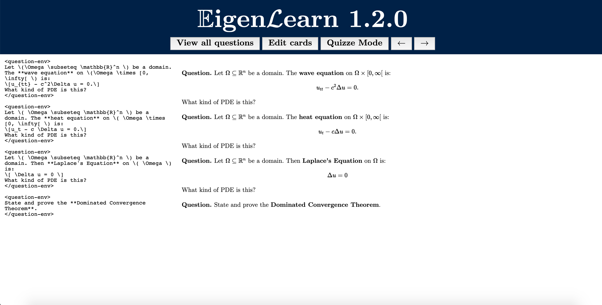

Physics
I'm finally learning physics properly this summer, starting with U0 Physics (to prepare for classical mechanics in the Fall). I'm summarizing it here to keep track of things. This will be very boring for you if you have already taken U0 Physics (I'm working through the ``University Physics''
textbook), so please ignore and please don't laugh, I haven't taken a physics class since High School :)
Chapter 2: Motion Along a Straight Line
2.1: One-Dimensional Motion with Constant Acceleration
Kinematics
is the study of motion. Let \( x \) denote the position of a particle, \( x_0 \) denote the initial position, \(a \) denote the acceleration, \(v \) denote the velocity, and \(v_0\) denote the initial velocity. Then, we have the following
Kinematic Equations
, which describe the motion of a particle if we assume that the acceleration \( a \) is constant in time:
\begin{align} v & = v_0 + a t \\
x & = x_0 + v_0 t + \frac{1}{2} at^2 \\
v^2 & = v_0^2 + 2a(x-x_0) \\
x-x_0 & = \frac{1}{2}(v_0 - v)t \end{align}
2.2: Freely-Falling Bodies
Free fall
is an idealized motion where we ignore the affects of (a) air resistance and (b) the curvature of the Earth. Thus, it's only suitable when the distance of the fall is small compared with the radius of the Earth (which allows us to assume a roughly constant acceleration, and apply the equations from 2.1). The only modification we make here is that we fix \( a = 9.80 m/s^2 \), which is the value for the acceleration due to gravity of a freely-falling body on the surface of the Earth.
2.3: Velocity and Position by Integrating
How can we get equations describing the motion of a particle moving in a straight line if acceleration is not constant; i.e., we're given an acceleration function \( a(t) \)?
Let \( t_1 = 0 \) and let \( t_2 \) be some later time. We can obtain values for \( v(t) \) and \( x(t) \) for non-constant acceleration by integrating:
\begin{align}
v(t) & = v_0 + \int_0^t a(s) ds \\
x(t) & = x_0 + \int_0^t v(s) ds
\end{align}
Chapter 3: Motion in Two or Three Dimensions
3.1: Position and Velocity Vectors
For notation, we denote the
position vector
by:
\begin{align}
\mathbf{r} := x \hat{\mathbf{i}} + y \mathbf{\hat{j}} + z \mathbf{\hat{k}}
\end{align}
where \(\hat{\mathbf{i}} \), \(\hat{\mathbf{j}} \), and \(\hat{\mathbf{k}} \) are the standard basis vectors of \( \mathbb{R}^3 \)
3.2: The Acceleration Vector
The
acceleration
will describe changes in the velocity magnitude (speed) and changes in the direction of velocity. the acceleration vector \( \mathbf{a}(t) \) will be tangent to the path (and thus tangent to the velocity) \( \iff \) the particle is moving in a straight line.
We can resolve the acceleration vector into its parallel (\(a_{\parallel} \)) and perpendicular (\( a_{\perp}\)) components. The parallel component tells us about changes in the speed. The perpendicular component tells us about changes in the particle's direction of motion. In its fullest generality,
\begin{align}
a = a_{\parallel} + a_{\perp}
\end{align}
3.3: Projectile Motion
A
projectile
is a body that is given an initial velocity and then follows a path entirely determined by the affects of gravitational acceleration \( g \) and air resistance. We call the path followed by a projectile a
trajectory
.
We study an idealized system where the projectile is represented as a particle with a constant acceleration due to gravity and where the effects of air resistance, curvature, and the rotation of the Earth are all neglected (for now). We specify an initial velocity by providing the initial magnitude (i.e., speed) [denoted by \( v_0 \)] and initial direction (denoted by \( \alpha_0 \)), which is the angle that the velocity vector makes with the \(x\)-axis. The equations of motion are hence given by:
\begin{align}
x(t) & = (v_{0} \cos(\alpha_0))t \\
y(t) & = (v_{0} \sin(\alpha_0))t - \frac{1}{2}gt^2 \\
v_x(t) &= v_0 \cos(\alpha_0) \\
v_y(t) &= v_0 \sin(\alpha_0) - gt
\end{align}
From the above set of equations, we can obtain the following pieces of information:
- The distance \(r \) from the origin at any time \( t \):
\begin{align}
r(t) = \sqrt{x(t)^2 + y(t)^2}
\end{align}
- Projectile's speed at any time \( t \):
\begin{align}
|| v(t) || = \sqrt{v_x(t)^2 + v_y(t)^2}
\end{align}
- The direction (i..e, the angle \(\alpha \) the trajectory makes with the \(x\)-direction):
\begin{align}
\tan(\alpha) = \frac{v_y}{v_x}
\end{align}
Moreover, we can derive an equation for the shape of the trajectory in terms of \(x\) and \(y\) by eliminating \(t \). We'll obtain an expression of the form \( y = bx - cx^2 \) (i.e., a parabola). The expression is:
\begin{align}
y = ( \tan(\alpha_0))x - \frac{g}{2v_0^2 \cos (\alpha_0)} x^2
\end{align}
3.4: Motion in a Circle
3.4.1: Uniform Circular Motion
Uniform circular motion
is when a particle moves in a circle with a constant speed. Hence, the acceleration vector will be perpendicular to the path, and also directed inward. The magnitude of the acceleration, \( a_{\text{rad}} \), is given by:
\begin{align}
a_{\text{rad}} = \frac{v^2}{R}
\end{align}
We can also call this acceleration due to uniform circular motion
centriptal acceleration
. We define the
period
of a motion to the time it takes for one revolution to occur. We can re-write the centripital acceleration in terms of the period:
\begin{align}
a_{\text{rad}} = \frac{4 \pi^2 R}{T^2}
\end{align}
3.4.2: Non-uniform circular motion
If the speed varies, then acceleration will also have a tangential component:
\begin{align}
\mathbf{a} = a_{\text{rad}} + a_{\text{tan}} = \frac{d || \mathbf{v} ||}{dt} + \frac{v^2}{R}
\end{align}
3.5: Relative Velocity
The
relative velocity
is the velocity of a particular observer relative to that observer.
3.5.1: Relative Velocity in One Direction
A
Frame of Reference
is an observer equipped with a meter-stick and stop-watch. Notation: let \( P \) be a point, and let \( A \) and \( B \) be reference frames. Then, \( x_{P/A} \) will denote the position of \( P \) relative to the reference frame \( A \). Moreover, the position of the origin of \( B \) with respect to the origin of \( A \) is \( x_{B/A} \). We thus have:
\begin{align}
x_{P / A} & = x_{P / B} + x_{B/A} \\
v_{P/A} & = v_{P / B} + v_{B/A}
\end{align}
3.5.2: Relative Velocity in Two or Three Dimensions
It's exactly what we would expect. Let \( \mathbf{r} \) denote the position vector. Then:
\begin{align}
\mathbf{r}_{P/A} & = \mathbf{r}_{P/B} + \mathbf{r}_{B/A} \\
\mathbf{v}_{P/A} & = \mathbf{v}_{P/B} + \mathbf{v}_{B/A}
\end{align}
We call the above transformation the
Galilean Velocity Transformation
. We also have the general rule that for all reference frames \( A \) and \( B \),
\begin{align}
\mathbf{v}_{A/B} = - \mathbf{v}_{B / A}
\end{align}
Chapter 4: Newton's Laws of Motion
Dynamics
is the study of the relationships between motion and the forces which cause motion. The basis of this topic are
Newton's Laws of Motion
, and this forms the foundation of
classical mechanics
, which is a very good description of reality so long as we are not working with relativistic speeds (speeds comparable to the speed of light) or small objects (atomic scale).
4.1: Force and Interactions
A
force
is an interaction between a body and its surroundings or between two objects. It's a vector quantity. Types of forces:
Contact force
: a force involving direct contact between two objects.
Normal force
: a force that's always perpendicular to the surface of contact between the objects.Friction force
: a force that is parallel to the surface of contact between the objects that points in the opposite direction of motion.Tension force
: a force that results from pulling on an object by something like a string. This is denoted \( \mathbf{T} \).
Long-range forces
: forces that do not requite direct contact between bodies, e.g., gravity or the electromagnetic force.
4.1.1: Superposition of Forces
The principle of the
superposition of forces
states that any number of forces applied to a body have the same affect as a single force that is the sum of all the individual forces. This is called the
net force
acting on a body. We denote it by:
\begin{align}
\mathbf{R} = \sum_{i=1}^N \mathbf{F}_i
\end{align}
and we can find the magnitude and direction of \( \mathbf{R} \):
\begin{align}
|| \mathbf{R} || = \sqrt{R_x^2 + R_y^2} \hspace{1cm} \tan (\theta) = \frac{R_y}{R_x}
\end{align}
4.2: Newton's First Law
Newton's First Law of Motion: A body acted upon by no net force has a constant velocity and hence zero acceleration. The tendency of a body to either remain at rest or keep moving once its set in motion is called inertia. We say that an object is in equilibrium if an object is either at rest or moving with a constant velocity. Hence, Newton's First Law states that for an object in equilibrium, one has:
\begin{align}
\sum_{i=1}^N \mathbf{F}_i = \mathbf{0}
\end{align}
where \( \mathbf{F}_1 \), ... , \( \mathbf{F}_N \) are the forces acting on the body.
4.2.1: Inertial Frames of Reference
An
inertial reference frame
is a reference frame where Newton's First Law is valid. The Earth is approximately an inertial reference frame. Given one inertial reference frame \( A \), we can construct any other reference frame \( B \) by considering a reference frame that is moving with a constant velocity relative to \( A \).
4.3: Newton's Second Law
Many experiments show that for a given body, the ratio of the magnitude of the net force, \( || \sum_{i=1}^N \mathbf{F}_i || \), to the magnitude of the acceleration, \( || \mathbf{a} || \), is constant. Hence, we have a quantitative measure of inertia:
\begin{align}
m = \frac{|| \sum_{i=1}^N \mathbf{F}_i ||}{|| \mathbf{a} ||}
\end{align}
We define this ratio to be the
inertial mass
. We can thus express Newtons (the unit of force) in terms of the standard units as follows:
\begin{align}
1 N = 1 \text{kg} \cdot m/s^2
\end{align}
Experiments also verify that what matters in terms of acceleration is the
net force; these forces are what cause objects to accelerate.
Newton's Second Law of Motion: A body accelerates if a non-zero net force acts on the body. This acceleration is in the same direction as the net force. Mathematically,
\begin{align}
\sum_{i=1}^N \mathbf{F}_i = m \mathbf{a}
\end{align}
Four remarks on Newton's Second Law:
- It's a vector equation, and so to analyze we break it down into component-form.
- It only includes external forces
- \(m \) must be constant; for systems where the mass varies, momentum is a more suitable concept.
- As with Newton's First Law, it's only valid in inertial reference frames
4.4: Mass and Weight
The
weight
of an object is the gravitational force exerted on a body by the Earth. Hence,
\begin{align}
\mathbf{w} = m \mathbf{g}
\end{align}
4.5: Newton's Third Law
Newton's Third Law of Motion: forces come in two pairs; if a body \( A \) exerts a force on a body \( B \), then \( B \) exerts a force on \(A \) that is equal in magnitude but in the opposite direction. Mathematically,
\begin{align}
\mathbf{F}_{\text{ \(A \) on \( B \) }} = - \mathbf{F}_{\text{ \( B \) on \( A \) }}
\end{align}
We call the pair \( \mathbf{F}_{\text{ \(A \) on \( B \) }} \) and \( \mathbf{F}_{\text{ \( B \) on \( A \) }} \) an
action-reaction pair
. Two forces in an action-reaction pair
never act on the same body.
4.6: Free-body Diagrams
Free-body
diagrams are an important tool used to solve physics problems. Some things to keep in mind when solving physics problems:
- Newton's first and second laws can only be applied once you choose the that you are going to analyze.
- We only consider the forces acting on the body.
- If there are multiple bodies, then you need to take the problem apart and draw a free-body diagram for each body.
Chapter 5: Applying Newton's Laws
\(\mathbb{E}\text{igen}\mathcal{L}\text{earn}\)
In progress (v1.2.0): a hybrid of
Rosie's Dream and Anki --
EigenLearn. EigenLearn renders \( \LaTeX \) using
gabdown.
How do you use this? When you open the link, there will be a sample set of questions written in gabdown. Unless you are on mobile, the default mode is ``edit'', which should look like this:

Write your questions using gabdown (for documentation, see
here). To add a question, add the following code:
<question-env> Precisely state the **Spectral Theorem for compact self-adjoint operators**.
</question-env>
There are two other modes: you can view all the cards simultaneously using ``View all questions'' and you can take a quiz using ``Quizze Mode.''
Ideas for v1.3.0+: We are looking to eventually incorporate some form of a spaced-repetition algorithm, allow users to upload their questions as gabdocs, and more. We also want to fix some UI issues, such as the arrows for quiz mode being visible on the edit and view cards modes.
Gabdown Files
To use, for now, just paste the contents of the
.gd file into the text box of the ``edit'' mode. The default for now is Math 454, more to come later.
Math 454 (Analysis III)
You can download my CV
here.
Personal Data
Name: Shereen Elaidi
Email: firstname[dot]familyname[at]mail[dot]mcgill[dot]ca
Citizenship: American
Education
McGill University, Montreal, Canada (September 2017 - May 2021 [expected])
B.A. in Honours Mathematics, Computer science minor
Department of Mathematics and Statistics
McGill University, Montreal, Canada (September 2016 - May 2017)
B.A. in Political Science & Economics
Departments of Political Science and Economics
Research Experience
Mathematics and Statistics Department Undergrad Research (May 2020 - August 2020)
The study of the wave equation in cosmological space-times with random initial conditions under the supervision of Professor Chen, Professor Jakobson, and Professor Tsogtgerel.
Canadian Centre for Computational Genomics (C3G) (May 2019 - August 2019)
Installed the whole genome shotgun (WGS) sequencing program, MOCAT2, on the lab's computing clusters. Wrote a pipeline to use MOCAT2 to analyze the influence of the gut's microbiome on the development of fibromyalgia. Modified MOCAT2's code to reduce the run-time and RAM usage. We then used this program to analyze 156 samples from patients to determine the influence, if any, of the gut's microbiome on developing fibromyalgia.
McGill Space Institute (MSI) (February 2018 - August 2018)
Wrote and debugged a Python program to compute light-curves from exoplanets under the supervision of Professor Cowan. Light-curves encode information about an exoplanet's atmosphere, which is useful for exocartography (exoplanet mapping). I also attended weekly journal clubs discussing the most recent developments in astrophysics research and volunteered to help run MSI science outreach programs.
Talks
A Brief Introduction to Ergodic Theory (Seminary on Undergraduate Mathematics in Montreal, January 2020) [PDF].
Building up to Lorentzian Causality Theory (Directed Reading Program Talks, January 2020) [PDF].
Work and Extracurricular Experiences
- SUMS VP Academic (May 2020 - May 2021)
- VP Academic position on SUMS (the undergraduate student society for mathematics of McGill University).
- Undergraduate student marker in the Math Department (January 2019 - December 2019)
- Graded for: Math 247 (H. Applied Linear Algebra), Math 203 (Introduction to Statistics), Math 254 (H. Analysis 1).
- Directed Reading Program (September 2019 - January 2020)
- Lorentzian Causality Theory
- Mathematics Peer Mentor (December 2019 - Present)
- Mentors a U0/U1 math student by helping them adjust to university and Montreal.
- McGill NeuroTech Team (June 2019 - August 2019)
- Read academic papers about Spiking Neural Nets (SNNs) and implemented an LSTM model to predict ``left'' or ``right'' brain signals using TensorFlow. The project was to develop a game to collect data for the brain-controlled wheelchair built the previous semester.
- AI For Social Good Lab (May 2018 - June 2018)
- Attended three weeks of ML lectures. Worked on an app to predict the most dangerous time and location to ride a bicycle in Montreal. Worked on a project to predict if a picture featured a construction site or not to help blind individuals navigate Montreal at the AI4Good Hackathon.
- Minireference (February 2018 - April 2018): used the TikZ package in LaTeX to produce 40 vector graphics for a linear algebra textbook.
- Hannaford Supermarkets (June 2015 - December 2017): cashier, bagger, and cart retriever.